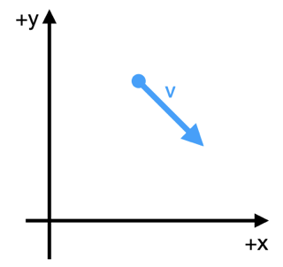
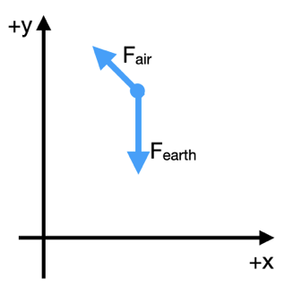
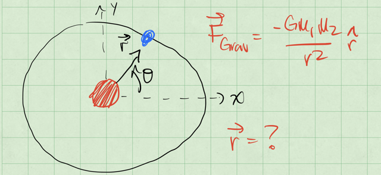
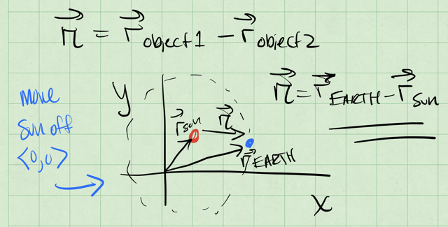
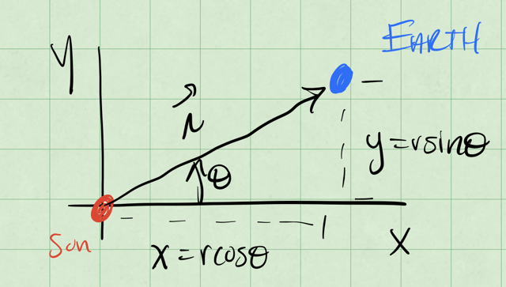
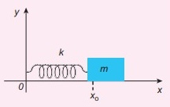

Week 4 - Notes: Equations of Motion#
As you might have noticed in the last few weeks, our principal work is using models to develop equations of motion. Those equations of motion can then be analyzed, integrated, and plotted to understand the behavior of the system. This week, we will focus on the equations of motion for a few different systems.
We will set up the equations of motion for a 2D quadratic drag system and show it’s intractable analytically. Here is where our use of [Euler-Cromer integration] can get us out of trouble. We will also develop the analytical solution to the 2D drag case when the drag is linear, which will show us how to solve these problems and compare them things we know.We will then quickly introduce two additional systems that are very common “base models” for more complex systems: (1) the gravitational bound planet system (a proxy for other central force systems) and (2) the simple harmonic oscillator (a common proxy for many oscillatory systems).
Two-Dimensional Quadratic Drag#
The drag force in 2D can be written in terms of the velocity vector of the object as:
where \(D\) is the drag coefficient and \(\vec{v}\) is the velocity vector. Note that this force is written entirely using velocity, there is no dependence on position. However, the velocity vector is also function of time, \(\vec{v} = \vec{v}(t)\).
Define the Coordinate System#
To start this analysis, we need to define a coordinate system. Below, we draw the particle at some random time with the vecolicty vector shown. The axes are typical: \(x\) is horizontal and \(y\) is vertical. The drag force is always opposite to the velocity vector, so it will always be in the opposite direction of the velocity vector.

In this coordinate system, the properties of the particle are:
where \(\hat{x}\) and \(\hat{y}\) are the unit vectors in the \(x\) and \(y\) directions, respectively. And the magnitude of the velocity vector is \(|\vec{v}| = \sqrt{v_x^2 + v_y^2}\) as you might imagine.
The free body diagram at the point in time shown above is shown below. You see the gravitational force pointing directly downward and the drag force pointing in the opposite direction of the velocity vector. We continue to apply our coordinate system to the forces.

Apply Newton’s Second Law#
We now apply Newton’s Seccond Law to the particle in the chosen coordinate system. The forces acting on the particle are the gravitational force and the drag force.
How do we apply the coordinate system to the forces? We focus on the diagram above. We start by writing the sum of the forces. For this, we take \(F_{gravity,x}\) to be a positive value, \(mg\), where \(g\) is the magnitude of the acceleration due to gravity.
We can now write the forces in terms of the components of the vectors, and we introduce the acceleration vector, \(\vec{a} = \langle a_x, a_y \rangle\).
Let’s clean this up a little in terms of the components:
We can try to focus on the velocity instead to simplify the equations. Then we integrate those equations to get the position.
Rats! There is no analytical solution to these equations.
These are called coupled differential equations because the equations are linked by the terms \(\dot{x}\) and \(\dot{y}\). This means that we cannot solve them independently. We need another approach to solve these equations.
Why can’t we solve these equations?#
We cannot form a solution because they are coupled and non-linear. Sometimes, we can decouple these equations (as we will see later) and produce partial differentials of the form:
These lead to independent equations of motion. We can use separation of variables to try to solve them. This is not possible in all cases, so functions are still not integrable analytically. But we cannot even form these partials, so an analytical solution is not possible in this case.
Linear Drag in Two-Dimensions#
As we saw above, the quadratic drag case is intractable. However, the linear drag case is analytically solvable. The drag force in 2D can be written in terms of the velocity vector of the object as:
where \(\gamma\) is a proxy for the drag coefficient. The linear drag force is proportional to the velocity vector.
We have the same set up as before and same FBD.
And thus the same coordinate system. The properties of the particle are the same as above.
Apply Newton’s Second Law#
We now apply Newton’s Seccond Law to the particle in the chosen coordinate system. The forces acting on the particle are the gravitational force and the drag force.
Again, the gravitation force magnitude is \(mg\), so we write the forces in terms of the components of the vectors:
In terms of the acceleration vector, \(\vec{a} = \langle a_x, a_y \rangle\), we have:
Notice that \(v_x\) and \(v_y\) are the components of the velocity vector; they can be positive, negative, or zero. We can clean this up in terms of the velocity components, and we have two linear, uncoupled differential equations:
Solve the Equations#
We can try to solve these equations by integrating them. We can integrate the first equation to get the velocity in the \(x\) direction as a function of time.
Velocity in the \(x\) direction#
We separate the variables and integrate:
We integrate from \(v_{0,x}\) to \(v_x\) and from \(0\) to \(t\):
We see an exponential decay in the velocity in the \(x\) direction.
Velocity in the \(y\) direction#
Now we can try to do the same for \(v_y\):
We separate the variables and integrate:
Note that this integral will be of the form:
Again, we integrate from \(v_{0,y}\) to \(v_y\) and from \(0\) to \(t\):
Next we use exponentiation and do a little algebra to solve for \(v_y\):
In the \(y\) direction, the story appears more complex.
Trajectories#
One of the main concepts we will discuss the trajectory of a system. We borrow that language and idea from projectile motion – the location of the particle as a function of time is the trajectory. In this class, we will consider the word trajectory to mean the evolution of any property of the system as a function of time. This connects strongly to the concept of phase space, which we will discuss in the future.
In the prior example, we found the trajectory of the velocity in the \(x\) and \(y\) directions.
We can expound on that work to find the trajectory of the position of the particle as a function of time. We can integrate the velocity to get the position.
Those integrals are doable, but they can be a little messy. We won’t do them here, but quote the results consistent with the above equations.
2D Gravitational Bound System#
Consider a massive object (a large star) and a smaller satellite (a moon or small planet). We know that Newton’s Universal Law of Gravitation tells us the force between two objects that interact gravitationally is:
where \(G\) is the gravitational constant, \(m_1\) and \(m_2\) are the masses of the objects, and \(r\) is the distance between the objects.
But we need to be more clear about the forces and the vector relationships. Consider the figure below with the massive object at the origin and the satellite at some distance \(r\) from the origin. What is the vector \(\vec{r}\) that describes the location of the satellite?

If we move the sun from the origin a little, we can start to see what \(\vec{r}\) is. The vector \(\vec{r}\) is the vector from the sun to the satellite. See the figure below to see the sketch.

So if the location of the sun is \(\vec{r}_{sun}\) and the Earth is \(\vec{r}_{earth}\), then the vector \(\vec{r}\) is:
Let’s return to the simplified model with the sun at the origin, and consider the earth at some distance \(r\) from the origin. The force on the earth is:
where \(M_{sun} = 2\times10^{30} \mathrm{kg}\) is the mass of the sun and \(M_{earth} = 6 \times 10^{24} \mathrm{kg}\) is the mass of the earth.
Define the Coordinate System#
In the figure below, we show the earth at some distance \(r\) from the origin at an angle \(\phi\) from the \(x\)-axis. This distance is about \(1.5 \times 10^{11}\;\mathrm{m}\) or \(1\;\mathrm{A.U.}\) (astronomical unit). While not entirely obvious, the scale of these numbers allow us to assume the Sun is at the origin, and doesn’t move. Although this is not a good assumption for the real solar system, the sun orbits the barycenter of the solar system, which is about 1 solar radii from the center of the sun.

Let’s use the standard \(x\) and \(y\) axes to write the equations of motion. We can apply Newton’s Second Law to the earth in the chosen coordinate system.
So that the forces in the \(x\) and \(y\) directions are:
and thus the acceleration of the Earth in the \(x\) and \(y\) directions are:
This gives us a set of coupled differential equations.
How do we then get the trajectories?#
We can’t solve these equations without more information. We need to know the initial conditions of the system (the initial position and velocity of the Earth). We can then integrate these equations to get the position of the Earth as a function of time.
We have three potential ways to solve these EOMs:
Direct Integration: We can integrate the equations of motion directly. This is possible in some cases where the equations are simple enough; think about the falling ball without air resistance, or the linear 1D drag case.
Decouple and Solve: We try to solve the coupled differential equations by decoupling them. This is possible in some cases, but not all. We can frequently decouple the equations by writing them in terms of the velocity, or by making a change of position variables.
Numerical Integration: We use numerical methods to predict the motion in small time steps. This is the most common method for solving complex systems.
The Simple Harmonic Oscillator (SHO)#
In 1D, the simple harmonic oscillator is a system where the force is proportional to the displacement from the equilibrium position. The force is given by:
where \(k\) is the spring constant and \(s\) is the displacement from the equilibrium position, \(x-L_0\). The quantity \(L_0\) is the relaxed length of the spring. The figure below shows the typical horizontal spring system.

We can typically choose to measure the displacement from the equilibrium position, and write the force instead as:
So the equation of motion that we will try to solve is:
How do we solve this?#
where \(\omega = \sqrt{\dfrac{k}{m}}\) is the natural oscillation frequency of the system.
It might seem strange, but let’s try the following potential solution to the differential equation:
where \(C\) is a constant. We can take the second derivative of \(x(t)\) with respect to time to see if it satisfies the differential equation.
This is a solution to the differential equation as long as \(C\) is a constant, but it’s a complex one (\(C=a+ib\)). We can also write the solution in terms of the cosine and sine functions because the exponential function can be written in terms of these functions.
Thus, another general solution to this EOM that we can write is:
where \(A\) and \(B\) are constants that depend on the initial conditions of the system. Let’s see how that works:
Another form that works is:
where \(D\) is the amplitude of the oscillation and \(\phi\) is the phase of the oscillation. Let’s check that again:
So we have several forms of the general solution to the simple harmonic oscillator. We can use these solutions to understand the behavior of the system. We can also use these solutions to understand the behavior of more complex systems that can be approximated by the simple harmonic oscillator.
One critical aspect of these solutions is that they have 2 free parameters, \(A\) and \(B\), or \(D\) and \(\phi\). These parameters are determined by the initial conditions of the system. There are N free parameters in the general solution to an Nth order differential equation.